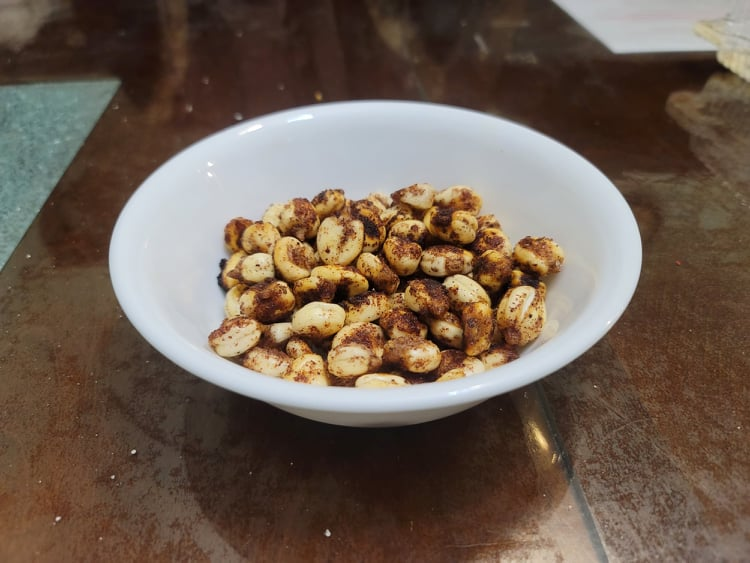

Corn Nuts

Ingredients:
- 2 cups large Dried hominy, soaked overnight in water
- 4 tbsp Sunflower oil
- 1 tbsp Maple sugar
- 1 tbsp Salt
- 1 tbsp Sumac
Instructions:
- Preheat the oven to 400 degrees Fahrenheit.
- Dry the hominy with a towel until dry to the touch. Then toss the hominy in a large bowl with the oil. Sprinkle with the seasonings and lay evenly onto a baking sheet.
- Bake for 25-35 minutes, shaking often, until darkened and crispy.
- Remove and serve immediately.